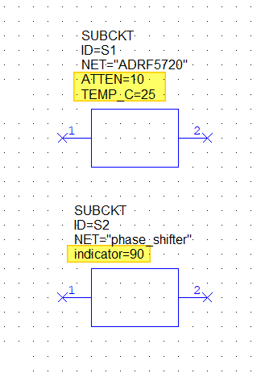

Export Network Set as Generalized MDIF File#
Frequently a set of Networks is recorded while changing some other parameters; like temperature, voltage, current, etc. Once this set of data acquired, it is sometime useful to combine all the networks into a single Generalized MDIF file for use in CAD tools like AWR Microwave Office.
[1]:
Narda 3752 phase shifter#
In this example, we are characterizing an old narda phase shifter 3752 at 1.5 GHz.

In order to deduce the phase shift that one can obtain at this specific frequency, we have measured scattering parameters in the 1-2 GHz band at 19 positions of the phase knob (from 0 to 180). These measurements are loaded into a NetworkSets object:
[2]:
# Array containing the 19 phase shift indicator values
indicators_mes = np.linspace(0, 180, num=19) # from 0 to 180 per 10
[3]:
ntw_set = rf.networkSet.NetworkSet.from_zip('phase_shifter_measurements/phase_shifter_measurements.zip')
print('ntw_set contains', len(ntw_set), 'networks')
ntw_set contains 19 networks
The content of the NetworkSet can be exported into a MDIF file:
[4]:
ntw_set.write_mdif("phase_shifter.mdif")
Note that is possible to tune the parameters, values and types defined in the MDIF file by passing the optional parameters values and data_types. Hence, making “indicator” an MDIF variable of type “double” and save the NetworkSet to “phase_shifter.mdif”:
[5]:
values = {"indicator": indicators_mes}
data_types = {"indicator": "double"}
ntw_set.write_mdif("phase_shifter.mdif", values, data_types)
ADRF5720#
ADRF5720 is 6-bit 9 kHz to 40 GHz digital step attenuator and is measured over temperature which results in many Touchstone files.
[6]:
# download the zip archive of ADRF5720 Touchstone files
url = "https://www.analog.com/media/en/simulation-models/s-parameters/ADRF5720_Sparameters.zip"
try:
response = requests.get(url, timeout=10)
open("ADRF5720.zip", "wb").write(response.content)
tmpdir = pathlib.Path(tempfile.mkdtemp())
zf = zipfile.ZipFile("ADRF5720.zip")
zf.extractall(path = tmpdir)
zf.close()
# filter out one file (which contains '5720_noDC')
input_files = [file for file in tmpdir.rglob('*.s2p') if '5720_noDC' not in file.stem]
ns = rf.NetworkSet(rf.read_all(files=[str(file) for file in input_files]))
print('ns contains', len(ns), 'networks')
# extract the attenuation value from the filenames and store in list
attn = []
temp = []
for f in input_files:
_,_,_,_,_,a,t = f.stem.split('_')
t = t.replace('M','-').replace('C','')
attn.append(float(a))
temp.append(int(t))
# sort files
v = list(zip(attn,temp,input_files))
v.sort()
(attn,temp,input_files) = list(zip(*v))
values = {'ATTEN': attn, 'TEMP_C': temp }
datatypes = {'ATTEN': 'double', 'TEMP_C': 'double'}
# write to a generalized MDIF file
ns.write_mdif("ADRF5720.mdif", values, datatypes)
except requests.ReadTimeout:
print('Timeout... skipping this example')
Timeout... skipping this example
Finally, the parameterized MDIF files can be imported into AWR Microwave Office:
